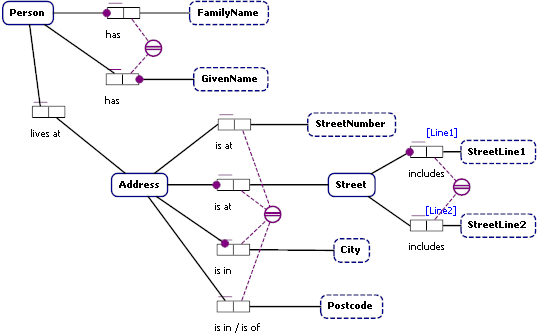
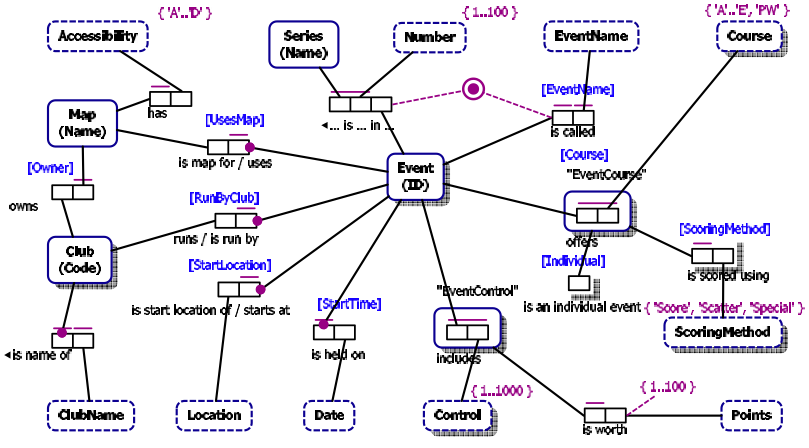
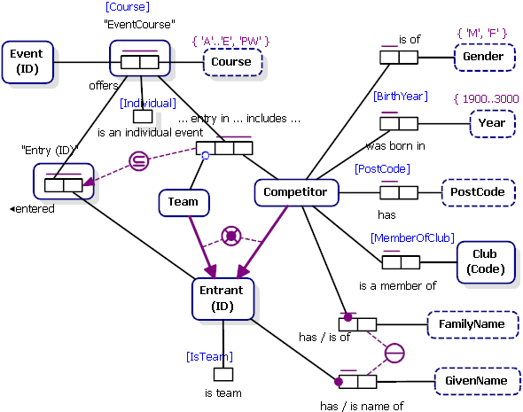
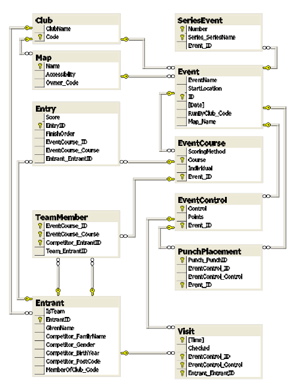
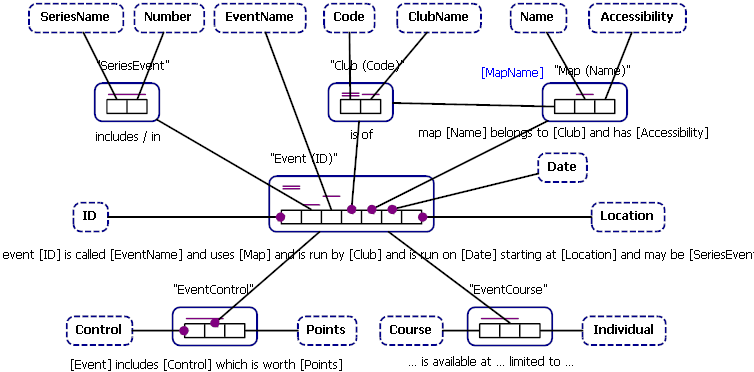

Copyright (c) 2007 Clifford Heath.
This links to a number of example ORM2 model files in various representations:
The models are as follows. ORM2 terminology is italicised on first use.
This very simple model shows a basic example of the features of ORM2 you'll be seeing most often, so I'll use it to introduce the features of the ORM2 visual language.
Note that ORM2 contains additional symbols that are used when a PI, UC, or MC applies to roles of more than one fact type. Such constraints are called external constraints. All the constraints on this diagram are internal.
This simple model shows a ternary fact type, with a UC spanning all roles.
Application here is the name of a software application, which can be installed
on any computer by any user. Applications may be installed for individual users
on a computer, so a given application is regarded as being installed on a given
computer by each user for (or by) whom it is installed. That's why the UC spans
all three roles. Note how a single reading is displayed with the role names in
brackets. It's possible for a ternary fact type to have up to six different
reading orders, and NORMA even allows more than one reading to be defined for
each reading order.
This model shows a ternary (which represents a student's participation in a school-sanctioned activity). The Participation ternary has a UC spanning two roles (which says that a given Student may only participate in a given Activity for a single School). But there are two occurrences of a new symbol, subset constraints. These constraints specify restrictions on the allowed fact population of the ternary fact type. The UC doesn't specify which school a student may represent for an activity, but the lower UC does - the population of the (School, Student) pair inside the ternary must be a subset of the enrolment population (always a matching pair). In simple terms, this requires that each student who participates in some activity may only do so as a representative of the school in which they're enrolled, and not for any other school. Furthermore, the upper subset constraint requires that such participation may only occur for an activity that is sanctioned by that school. Note that due to a display bug, the arrow head is missing here. It should point to the superset, which in this case is the sanctions fact type. This direction is consistent with the arrows used in sub-typing, as shown in the next case.
This example introduces many of the remaining features of ORM2, and shows one way to handle a particular thorny problem. The most obvious new features are the subtype relationships, which show respectively that a Person may be an Employee, and may be a Manager. ORM2 does not require that any person is either (they may be neither), or that a person is not both. Such external mandatory or exclusion constraints may be added to the implicit binary subtyping fact type if needed (not in this case).
The manages/managed by fact type between employee and manager is mandatory for each manager (a manager must have subordinates), but not for employee - because the CEO is an employee who has no manager.
Instead of adding a further subtype CEO to Employee, here we see a unary fact type called isCEO, which corresponds to a boolean condition on the player (an employee). An external exclusive-or constraint joins this role and the employees role in "managed by". This constraint is read "Each employee must either be CEO or be managed by some manager, but not both". Note that the exclusive-or symbol consists of a heavy dot, like the mandatory dot, indicating the mandatory aspect, and an X, symbolising "not both". ORM2 also allows external mandatory constraints (or inclusive-or constraints) shown like this but without the X, and external exclusion constraints which are the same again, but without the heavy dot.
The final new feature of this model is a ring constraint, of which there are eleven types. This one is an acyclic constraint, which says that no manager may be self-managed, nor may they be managed by any direct or indirect subordinate.

By now you're asking how all this mess of detail is going to be turned into a usable database design. Before moving on to a larger real-life example, let's cover the concept of absorption into a relational, or compound schema. Note that the absorption process requires all the entity types, fact types, and constraints for the model. Adding a single fact type or changing a constraint might require that some features are represented in new tables, or different ones, and these changes can cascade, so that a small change in the conceptual model requires a large database migration. Don't worry about that for now, as there are ways of minimizing the impact, and in the future the migration process will be fully automatic, and larger impacts may perhaps even be delayed without delaying the incremental schema change.
Before launching in, we see an external uniqueness constraint here for the first time. it joins the roles of FamilyName and GivenName; this schema will never allow two people to have the same two names. Normally, an external UC has a single line through the middle of the circle, consistent with the single line above covered roles in an internal UC, but this one is also a preferred identifier (for Person, obviously), so it has a double line. A double line is also used when showing a internal UC that's a PI.

Ok, here goes. How is it that the SQL for this whole detailed diagram requires only the single table shown? You can see that Street has exactly two StreetLine values allowed, and is identified by the combination of both, so here we can absorb these fact roles into a Street entity, which would be shown as an objectified type Street having two fact roles, one for each street line. The same principle applies again to Address, except here it absorbs StreetNumber, City, Postcode and both roles of the Street nested type. The same process continues with Person, which is finally absorbed to the single table you see shown in the SQL code. Note how the respective role names are appended to form column names like Address_Street_StreetLine1. This column should in fact be called Address_Street_Line1, but the Line1 role name has not been used (this is a bug in NORMA at present).
Note also that this table doesn't have, and cannot have, uniqueness constraints requiring that each Address occurs once only. Each Address is identified by its roles, but more than one person may live at the same address. Enforcement of the uniqueness constraints are unnecessary however. Just consider the absorbed Address roles as forming a multi-part foreign key to a table that's not needed. If someone wants the unique list of all addresses, it's possible to write an SQL projection to compute that set.
It's also possible to mark Address as an independent entity type, which is an instruction to the absorption process that indicates that this entity might exist apart from any roles it might play. Independent entity types are shown in ORM2 as having an exlamation point ! after their name. In order to represent an independent entity type in SQL, a separate table is always needed, and this can be used to enforce uniqueness. In this case however, Person would have a large multi-part foreign key into the new Address table, so it's preferable to introduce a surrogate key in the form of a database-allocated unique integer into the address entity, and mark that key as the preferred identifier instead. Note that this is not a detail of the conceptual model, but is merely a pragmatic concern which should not need to be shown; instead the absorption process should apply rules that require it to introduce such a surrogate key. Unfortunately this feature is not yet present in NORMA.
Finally, the piece de resistance, a working model of an administration, registration and scoring system for the sport of Orienteering. This model is somewhat extended to allow team events, as occurs in the derivative, but rather more extreme, sport of rogaining. Because the model is so big, it's presented in three separate diagrams, representing the three aspects already introduced. Any feature may show on more than one diagram, and the ORM2 rules don't indicate that such an element has a special affinity with any diagram on which it appears. Entities that appear on other diagrams are shown with a drop-shadow. The diagrams are presented without much comment, and after that, the absorbed (compound) form is shown as an entity-relationship diagram.

A couple of new features are shown here. Value restrictions or constraints and role value restrictions are shown in mauve. These are lists of values, or of ranges of values, which are drawn from the allowed values of the underlying type (data type or value type respectively), and restrict that value type or that role to values in the defined set.Also here you'll see an external mandatory constraint shown for the first time. This one requires that an event is either part of a series, or has a name, or both.
Finally there is a number of cases throughout this model where a surrogate
key is used. In a pure conceptual modelling tool these should never
occur, but as mentioned previously, NORMA doesn't have rules that tell it when
and how to inject one into a physical model. In addition to that, the resultant
model was to be used with Ruby on Rails, whose ActiveRecord module has a strong
preference for surrogate keys on every table.

The new feature here is an external x-or constraint on two subtype connectors, indicating that an Entrant must be either a Team or a Competitor, but not both. The subset constraint requires that a competitor may only be entered as a team member if their team is already entered for that same event course.

This model also shows the resultant score for a given Entrant's Entry to a
given Event. Normally this value will be computed from the times of their visits
to punches during the event, and according to a scoring method as advised.
However in this case we cannot record the complexities of all possible scoring
algorithms, nor the discretion of the judges in possibly adjusting scores, and
we don't require that Visit information necessarily be recorded in any case.
Either there may be no electronic recording of visits, or the score might depend
only on finishing order, and a provisional score awarded to be checked against
valid Visit data at a later time.
This is the final schema exactly as computed by NORMA. It looks right, and it is, almost. The only serious error I've found is that the PI for Competitor, which was split between the inherited GivenName role of Entrant and the competitor's family name, is not properly defined. It's a nice, pretty schema however and should work well after final adjustments have been made.


This diagram was produced in NORMA, but it is not elementary, rather it's a representation of just the administration part of the relational schema. I've turned off the red ink that NORMA displays when it detects non-elementary schemas. When the ActiveFacts project extracts the schema from a relational database, or one that's been absorbed into compound (relational) form, this is how it would look in ORM notation.